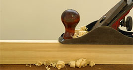
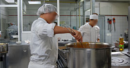
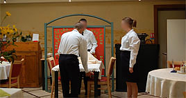

|
Présentation unité professionnelle |
 |
|
Dimanche, 05 Décembre 2010 11:25 |
|
|  |
Ce secteur accueille en moyenne une soixantaine de jeunes à temps complet ou séquentiel ayant les capacités pour entrer dans les apprentissages professionnels.
|
|
L’unité professionnelle propose plusieurs secteurs d’activités :
1. Le pôle hôtelier : Avec les ateliers cuisine, service en salle et service
2. Le pôle apprentissage des gestes manuels et techniques : Avec les ateliers conditionnement et le C.R.E (créations, réfections, entretiens).
|

|
Le temps professionnel et le temps pédagogique s’équilibrent dans la semaine
|

|
|
Objectifs généraux :
- Etablir des habitudes de travail
- Transmettre le maximum de gestes techniques
- Apporter et développer des connaissances théoriques
- Mise en situation d’autonomie et de production
- Orientation professionnelle en milieu de travail ordinaire ou protégé
- Mise en place de passerelles entre les différents groupes du pôle formation pour permettre de faire évoluer les jeunes dans des activités diverses et variées.
Sécurité
- Interdiction de pénétrer dans les ateliers sans être accompagné d’un adulte
- Obligation de porter la tenue complète de travail
- Mesures d’hygiène à respecter impérativement en ateliers restauration
- Apprentissage des mesures de sécurité inhérentes à chaque atelier |
|

|
|
|
Mise à jour le Jeudi, 22 Octobre 2015 18:17 |